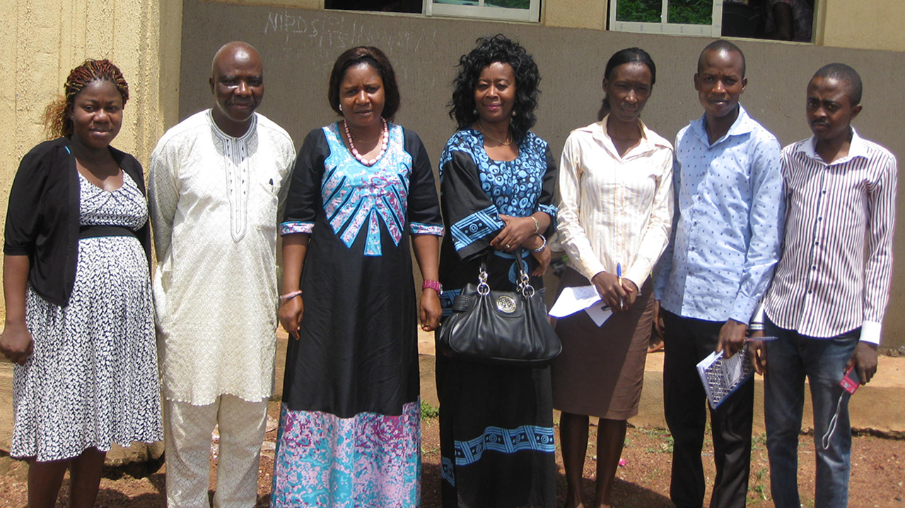

Our Programs
ACERDEN implements integrated development programs across Nigeria to empower communities, improve livelihoods, and promote sustainable environmental, social, and economic outcomes.
View All ProgramsProgram Overview
Explore our comprehensive development initiatives across multiple sectors
Agriculture, Nutrition & Food Security
Ensuring sustainable agriculture and nutrition to achieve lasting food security for all communities.
Learn MorePoverty Reduction
Implementing strategic programs to alleviate poverty and create opportunities for economic empowerment.
Learn MoreWater, Sanitation & Hygiene (WASH)
Improving access to safe water, sanitation infrastructure, and hygiene education in underserved communities.
Learn MoreEnvironment Conservation & Climate Resilience
Promoting a healthy environment with access to clean water and sanitation for improved well-being.
Learn MoreRural Development & Community Empowerment
Empowering communities through grassroots initiatives that foster sustainable growth and social cohesion.
Learn MoreHealth & Social Development
Providing accessible healthcare and leading targeted interventions in the fight against HIV/AIDS.
Learn MoreWomen & Youth Development
Championing the empowerment of women and youth through skill-building and leadership development programs.
Learn MoreEducation & Literacy Development
Expanding access to quality education and promoting literacy to unlock potential for all ages.
Learn MoreGovernance & Democracy
Strengthening democratic institutions and promoting good governance for a just and equitable society.
Learn MoreResearch, Monitoring & Evaluation (M&E)
Conducting baseline studies, impact assessments, and applied research to inform program design, policy, and practice.
Learn MoreWhy Our Programs Are Effective
Community-Centered
All programs are designed with input from local communities.
Evidence-Based
Programs are informed by research and data-driven strategies.
Integrated Approach
Combines agriculture, health, education, environment, and governance.
Long-Term Impact
Focused on sustainability and measurable results.
Positively impacting Nigeria


Ready to Make an Impact?
ACERDEN welcomes partnerships, collaborations, and support to scale programs and strengthen community resilience.
News, Reports & Insights
Stay informed with the latest field updates, research findings, and policy developments from our projects around the world.

Field Updates & Project Highlights

Research Findings & Baseline Reports

Policy Briefs & Learning Resources
ACERDEN NGO Programs
Frequently Asked Questions about our programs, partnerships, and impact measurement approaches.
How are ACERDEN's programs selected and designed?
Programs are chosen based on community needs assessments, research findings, and alignment with ACERDEN's mission for sustainable rural development.
Which areas of Nigeria do ACERDEN programs cover?
Programs are implemented primarily in rural and peri-urban communities across multiple states, with a strong focus in South-East Nigeria.
How does ACERDEN measure program impact?
Impact is measured through baseline and endline assessments, continuous monitoring, and evaluations aligned with international best practices.
Can international organizations partner with ACERDEN?
Yes. ACERDEN welcomes collaborations with local and international NGOs, donor agencies, and academic institutions.
Are communities involved in program implementation?
Absolutely. Community participation is central to all programs to ensure relevance, ownership, and long-term sustainability.
How can donors support ACERDEN programs?
Donors can provide funding, technical support, or a partner for program implementation. Details are available on the Partner With Us page.
Are ACERDEN's research findings publicly available?
Yes. Research reports, project evaluations, and learning resources can be accessed in the Publications & Reports section of the website.